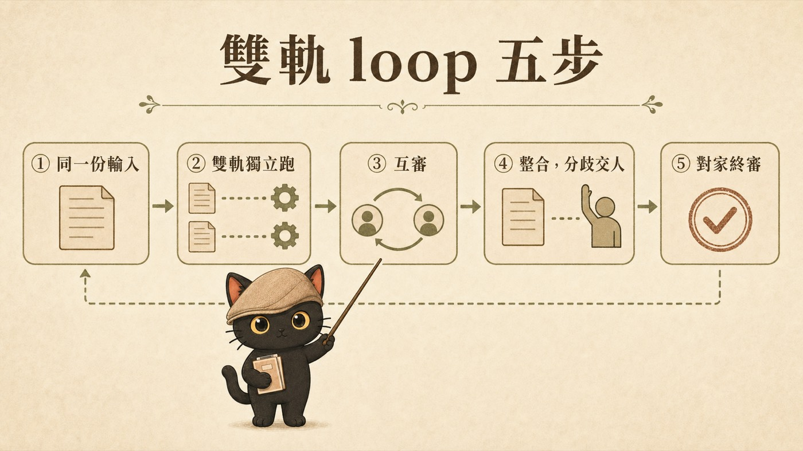
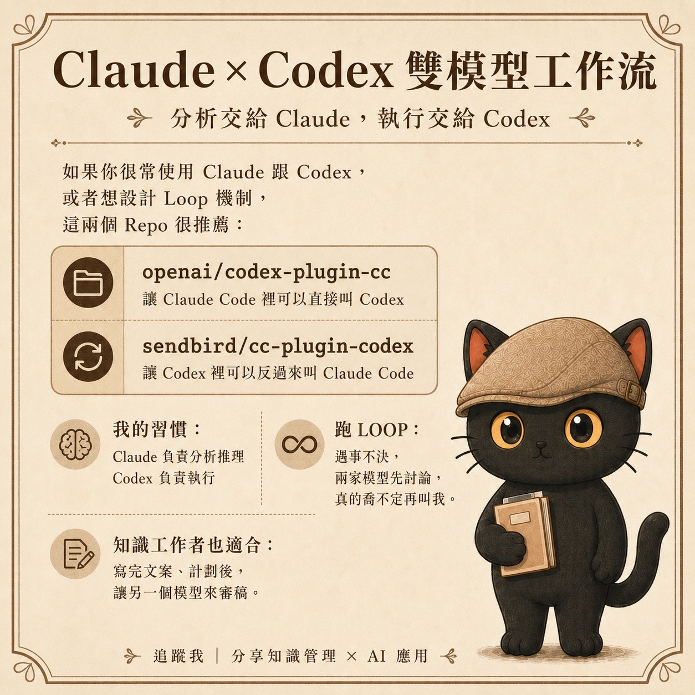

這篇在講什麼
AI 幫你寫企劃、提案、策略文件，寫得又快又順。但你有沒有想過，它從頭到尾都在順著你講？這篇記錄我怎麼讓兩個不同家的 AI 各自獨立寫同一份企劃，再互相挑錯，最後把真正的決定留給自己。整場流程今天真實跑過一次，數據和翻車點都在文章裡。
- 已經在用 AI 寫提案、企劃、報告，但心裡毛毛的，不確定能不能直接交出去的人
- 手上有 Claude 也有 ChatGPT，想知道兩個一起用可以強在哪的人
- 要送政府補助案、投標案、對客戶提案，輸不起一次盲點的人
- 一套完整的雙軌互審流程，五個步驟，照做就能跑
- 兩段可直接複製的提示詞，不用裝任何工具
- 一份真實案例的翻車清單：AI 提前演出了我的提案會怎麼死
趕時間的話，直接跳到「你可以怎麼開始」，提示詞在那裡。
真實現場
今天我要寫一份 SBIR 政府研發補助的提案企劃。
事情的起點是我看到市場上一堆公司在做 AI CRM、企業資訊整合平台，自動串接一大堆系統。我的定位跟他們用分工看：他們是資料水管工，把結構化資料匯集乾淨；我做知識萃取，把非結構化的文件變成組織的知識資產。這個定位要寫成一份能送審的企劃。
以前的做法是開一個 AI，跟它來回改。改到第五輪，文件看起來很完整，每一段都很有道理。但我後來發現一個問題：它每一輪都在順著我上一輪講的方向走。我說分工好，它就把分工寫得頭頭是道；我說公益組織是主場，它就把公益寫得情真意切。整份文件其實是我自己的想法被放大，沒有人在裡面唱反調。
送審的文件輸一次就是輸了，評審可不會順著我。
問題來源
拆開來看，單一 AI 寫重要文件有三個結構性的問題。
同一個模型，寫的時候用什麼邏輯，審的時候就用什麼邏輯。它挑不出自己邏輯裡的洞，就像我們自己校對自己的作文，錯字永遠找不完。
你先講了方向，AI 就在你的方向裡面做到最好。它很少退一步問：這個方向本身對嗎？你越早給結論，它就越早停止懷疑。
重要文件需要的是被挑戰，而 AI 預設的服務姿態是把東西完成。完成和正確中間，隔著一整排你看不到的地雷。
有人會說，叫同一個 AI 換個角色自我批評不就好了？我試過，換角色換得掉稱呼，換不掉底層的思考習慣，它還是用同一套邏輯在審自己，挑出來的多半是表面問題。
機制解法：企劃雙軌互審 loop
我的解法是讓兩個不同家的模型各自獨立跑完全程，再互相挑錯。今天的配置是 Claude 一軌、Codex 一軌（Codex 是 ChatGPT 家的桌面 AI，重點只有一個：它跟 Claude 是不同公司訓練出來的腦袋）。整條流程五步。
拍板過的想法、背景文件、官方資料整理成同一包，兩軌從同一條起跑線出發。
各自寫初稿、顧問挑盲點、模擬評審打分、自己修訂。過程互相看不到。
交換成品，你審我的、我審你的，固定五個審查重點。
收斂的放心採用；分歧的列成決策點，AI 不准自己拍板。
整合版再給另一家審一次，抓整合者自己的偏心。

第零步：同一份輸入
我把拍板過的想法、背景文件、官方資料位置整理成同一包，兩軌拿到的輸入完全相同。關鍵紀律：交接給第二軌的內容，不能夾帶第一軌已經寫出來的任何觀點，兩邊要從同一條起跑線出發。
第一步：雙軌獨立跑，互相看不到
每一軌各自做四件事：寫企劃初稿、找嚴格的顧問視角挑盲點、模擬目標評審打分、依前兩項自己修訂。
我這軌的顧問是兩個人設技能包，也就是把一位名人的思考方法整理成 AI 可以扮演的角色設定：第一性原理的馬斯克視角，和講槓桿與專屬知識的納瓦爾視角。
納瓦爾那關則把整份企劃的重心撬動了：與其說我們會萃取知識，先去證明萃取的品質可以被驗證，建出那把量尺，量化、研發性、智財、護城河四個問題會一起消失。
模擬評審這關，我先讓一個負責搜資料的子代理，把知識庫裡的官方審查資料盤出來：評分構面、查核點格式要求、常見扣分點、資格紅線。然後用這些資料餵出三位模擬評審委員，技術型、產業型、執行型各一位，每位帶著不同的挑剔習慣。三位給我的初稿打了 2 分、2 分、3 分，滿分 5 分。共同死因只有一個：整份企劃找不到一個合格的量化查核點，官方明文要「完成某模組、達成百分之幾」這種可驗收的寫法，我的初稿全是質化描述。
同一時間，Codex 那軌在完全看不到我這軌的狀態下獨立跑完。它自己寫了一版、自己挑了十五個盲點、自己模擬評審給自己打 57 分，滿分 100，還列了八個可能落選的死因。它甚至查出一個案別層級的問題：官方資料裡找不到台北市有獨立的「地方型 SBIR」頁面，提案的補助對象可能要換。
第二步：互審
兩軌都完成後交換。你審我的成品，我審你的成品。審查重點固定五項：有沒有曲解原意、內部有沒有矛盾、官方資料引用對不對、有沒有雙方都漏掉的新盲點、決策選項的呈現公不公平。
第三步：整合，分歧交給人
由發起的那一軌把兩份成品和兩份互審意見整合成一版。鐵則是：兩軌意見收斂的地方，可以放心採用；兩軌分歧的地方，AI 不准自己拍板，要列成決策點交給我。
今天的分歧點是受眾要鎖誰。一軌主張鎖公益組織，一軌主張鎖小微企業。這種商業判斷，AI 給選項和利弊就好，拍板是我的事。
第四步：對家終審
整合版是我這軌產的，所以最後再丟給對家審一次。這一關抓到了整場最有價值的一刀：我在呈現兩個受眾選項時，把既有的課程收入放進了其中一案的優勢欄。終審指出，課程收入證明的是執行能力，拿來當「這個服務有人要買」的需求證據，是在騙自己。兩案的需求證據其實都是零，起跑點相同。
它保證什麼、不保證什麼
盲點覆蓋比單模型大得多，兩家收斂的結論可信度高；防錨定，因為第二軌從乾淨的輸入出發；整個過程留下可稽核的工作檔，每個修改都能回溯到是誰、哪一關提出來的。
模擬評審是預演，真的評審委員怎麼想，模擬替代不了，送件前還是要找寫過或審過案子的真人過一次。AI 的所有產出都是選項和證據，拍板的責任沒有辦法外包。官方資料會過期，送件前要回原始來源重核。
你可以怎麼開始
不用裝任何工具，開兩個不同家的 AI 就能跑簡化版。三步。
第一步，把同一份需求分別貼給兩個 AI，提示詞可以直接用這段：
第二步，交換互審。把 A 的最終版貼給 B，B 的貼給 A：
第三步，挑一個 AI 把兩版和互審意見整合，分歧的地方自己拍板。
進階：讓兩家 AI 直接互叫
如果你常同時用 Claude 跟 Codex，或想把這條 loop 跑成半自動，推薦兩個開源套件：
- openai/codex-plugin-cc：讓 Claude Code 裡可以直接叫 Codex
- sendbird/cc-plugin-codex：讓 Codex 裡可以反過來叫 Claude Code
我自己的分工習慣：Claude 負責分析推理，Codex 負責執行。跑 loop 遇事不決，兩家模型自己討論，真的喬不定再來叫我。知識工作者最小的起手式就是：寫完文案、計劃後，讓另一個模型來審稿。

收尾 Recap
- 單一 AI 寫重要文件的三個結構問題：自審失明、錨定、只求完成
- 雙軌互審 loop 五步：同輸入、獨立跑、互審、整合留決策點、對家終審
- 實跑結果：模擬評審提前演出死因，終審抓到我自己看不到的偏心
- 收斂的可信，分歧的交人，模擬不取代真人
- 兩段提示詞，今天就能開兩個視窗跑起來
給自己的定位提醒
這套流程慢嗎？比單開一個 AI 慢。但我要的從來就是更快寫完一份文件嗎？我要的是送出去的東西經得起挑戰，是每一次跑完之後，盲點清單、評審視角、決策紀錄都留在我的知識庫裡，變成下一次的起點。用 AI 輔助決策、累積知識資產，速度只是順便的。
我是江江教練
隱性知識提煉師、AI 應用規劃師。我每月固定舉辦兩場免費線上講座，分享實戰經驗與方法論。如果你對這些主題感興趣，想持續學習，或是有顧問需求，都歡迎先從社群開始。
主要討論：善用 AI 作為思考夥伴，提升決策品質與思考深度；把知識、經驗，整理成提示詞、技能包、知識庫，讓 AI 能靈活運用。
歡迎加入我的 LINE 社群，免費講座與方法論都先在這裡分享。
加入 LINE 社群 ↗